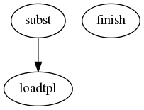

Master index
Index for m2html/@template/private
Dependency Graph for m2html/@template/private

Generated on Fri 30-Aug-2019 15:00:33 by
m2html
© 2003-2019
 Master index
Master index Master index
Master index